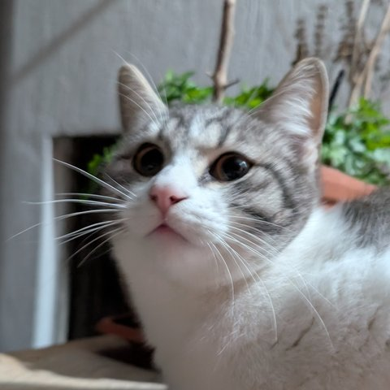

Visiting researcher, RWTH Aachen University
Nov 2024 – May 2025
PhD candidate in Information Technology
University of Parma, Italy
I build models that predict how a process will unfold and keep those predictions consistent with the rules the process has to follow.
I'm a PhD student in Information Technology at the University of Parma. My research has two strands. The first is neuro-symbolic methods for predictive process monitoring, so that predictions comply with business rules and logical constraints and hold up when data is limited. The second is machine learning for predictive analytics in healthcare.
Before the PhD I received my M.S. in Computer Engineering and my B.S. in Computer, Electronic, and Telecommunications Engineering, both from the University of Parma.
Nov 2024 – May 2025
Combining neural models with logical knowledge so that predictions about running process instances are both accurate and compliant with business rules.
Predicting sepsis early from clinical textual notes, using methods that encode medical knowledge alongside learned representations.
Example
response(ER Sepsis Triage, IV Antibiotics)
CAiSE 2026
Compliance-Aware Predictive Process Monitoring: A Neuro-Symbolic Approach
PAKDD 2026
BPM 2026
Fairness in Prescriptive Process Analytics: Integrating Fairness Constraints into the Learning Phase
SynIRgy Workshop at ECIR 2026
AMBER: A Modular Evaluation Pipeline for Business-Oriented Recommender Systems
Engineering Applications of Artificial Intelligence
Neuro-symbolic artificial intelligence for real-time sepsis mortality prediction
